GYUU HOTEL
Selamat datang di GYUU Hotel, tempat kenyamaan dan pelayanan terbaik menjadi proritas utama. Terletak di Lokasi
strategis Best Western Premier Panbil Jalan Ahmad Yani, Muka Kuning, Batam 29433 Kepulauan Riau, Indonesia,
hotel kami menghadirkan suasana yang hangat dan fasilitas modern untuk memenuhi kebutuhan para tamu,
baik dalam perjalanan bisnis maupun liburan.
Dengan berbagai pilihan kamar yang dirancang untuk kenyamanan maksimal, layanan pelanggan 24 jam, restoran dengan
menu pilihan, serta akses mudah ke berbagai destinasi menarik, kami berkomintem untuk memberikan pengalaman menginap
yang menyenangkan dan tak terlupakan.
Di GYUU Hotel, kami percaya bahwa setiap tamu adalah istimewa. Karena itu, kami selalu siap menyambut Anda dengan senyum
hangat, keramahan khas, dan pelayanan terbaik di setiap kunjungan Anda.
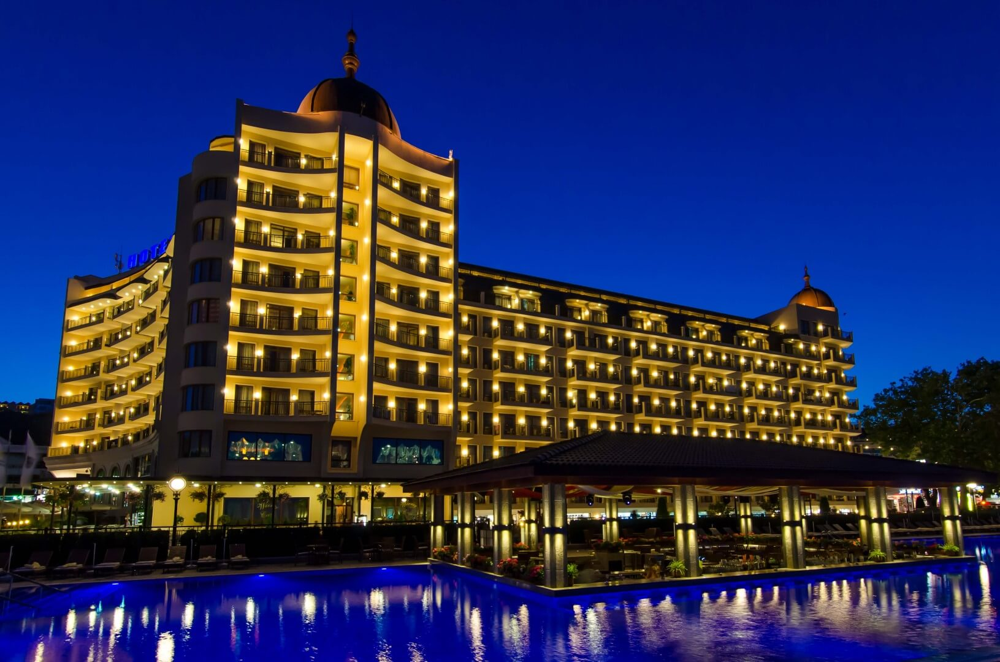


 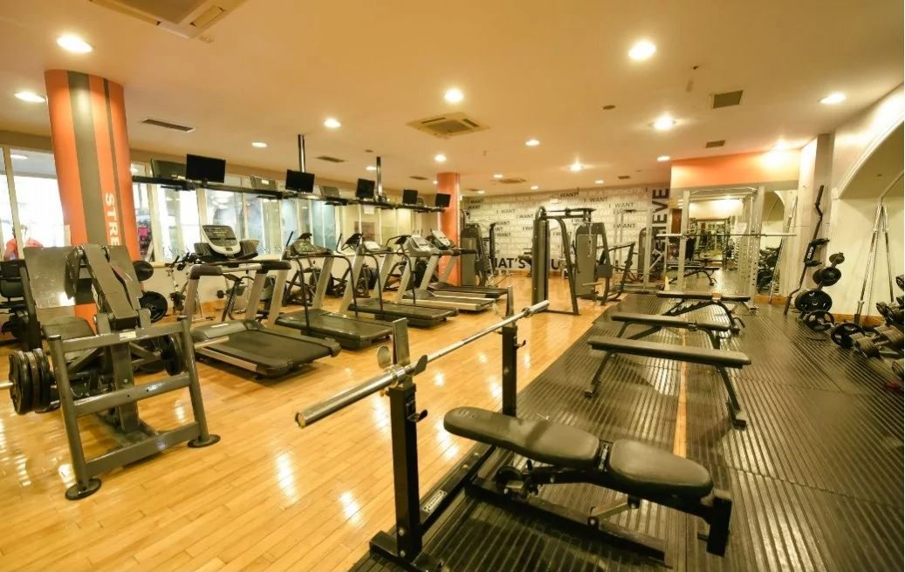
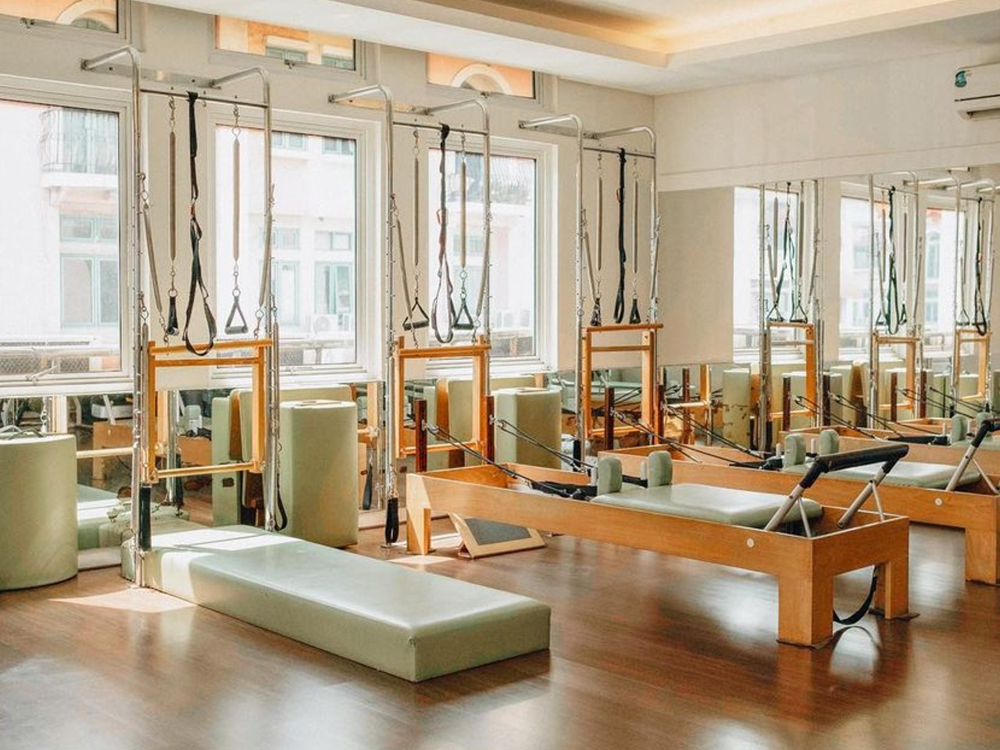
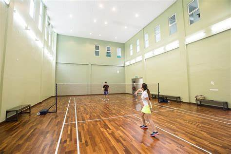
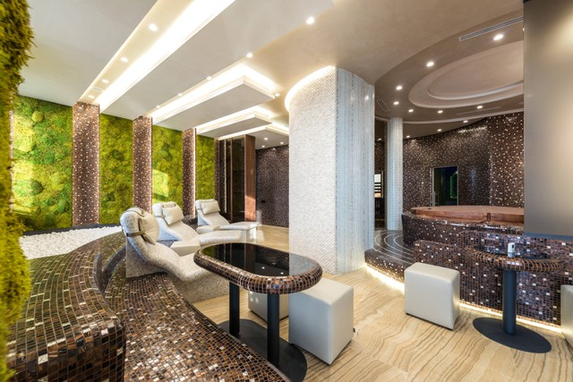
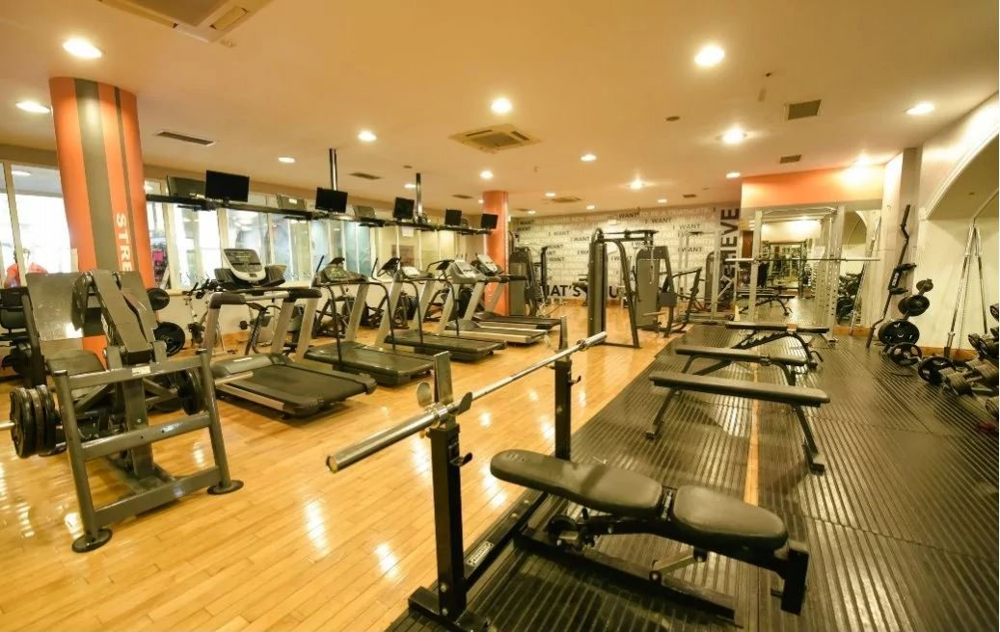
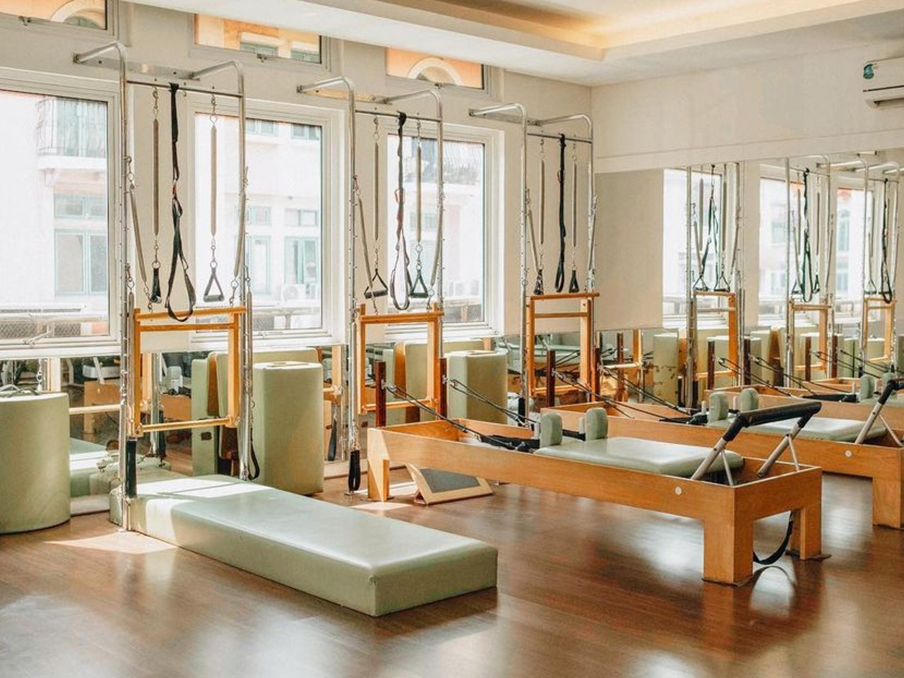
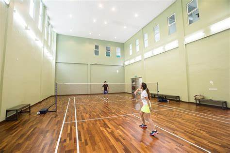
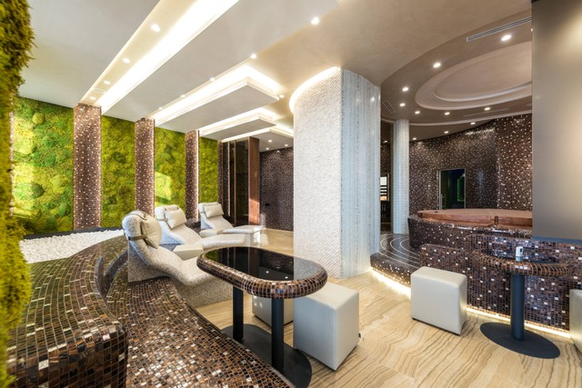
 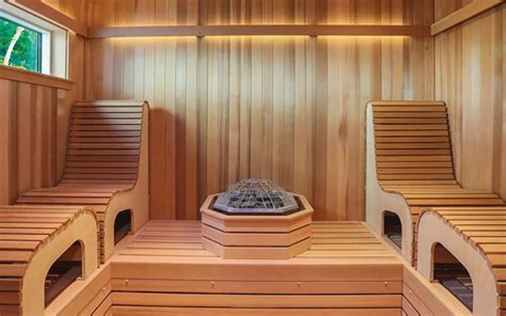
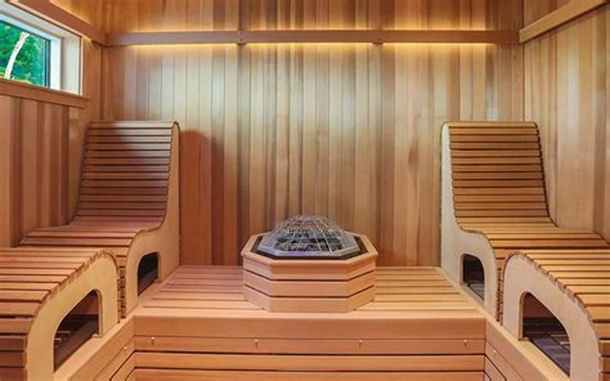
 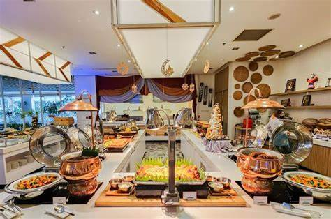
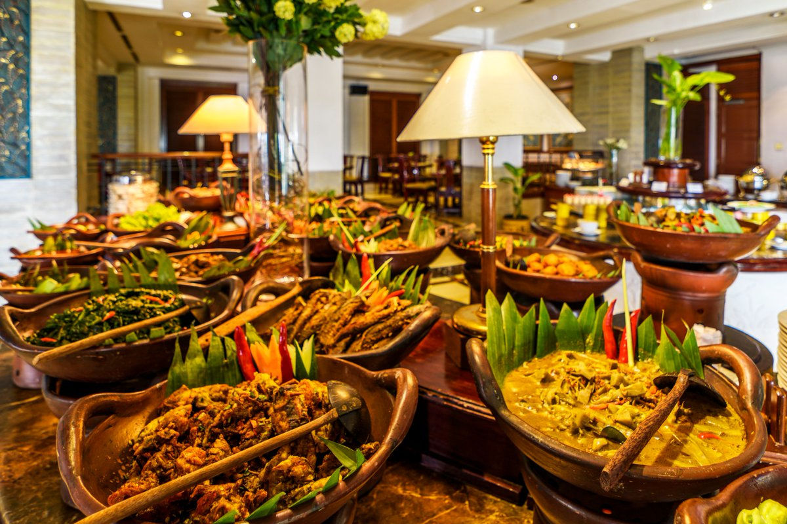
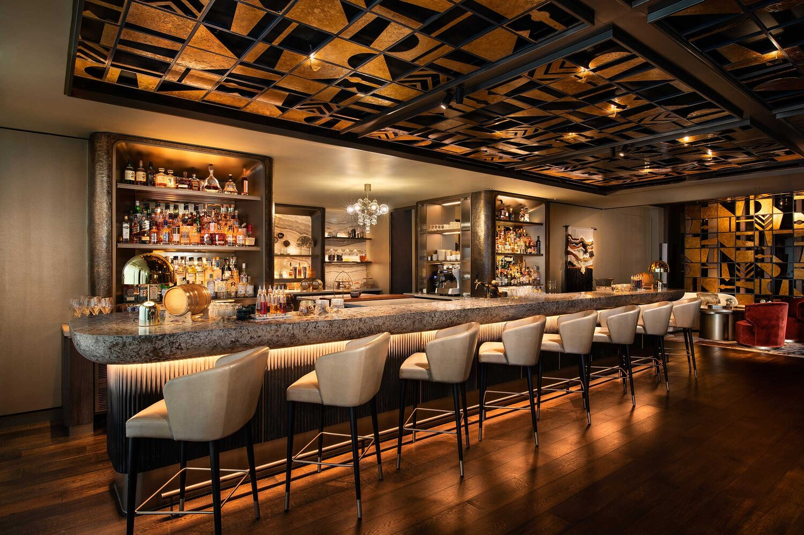
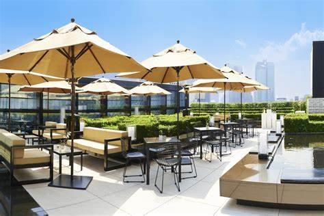
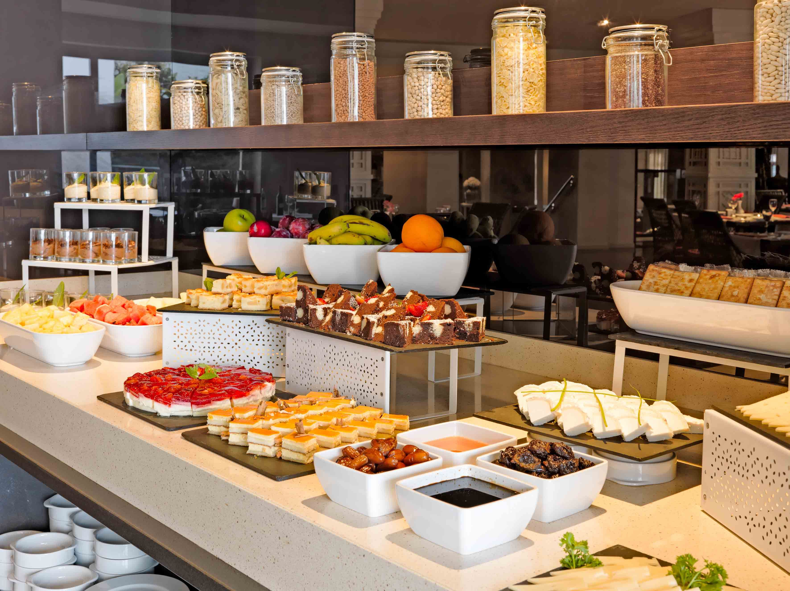
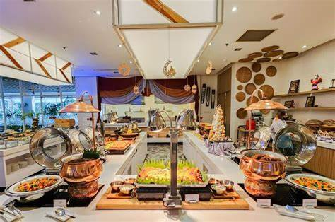
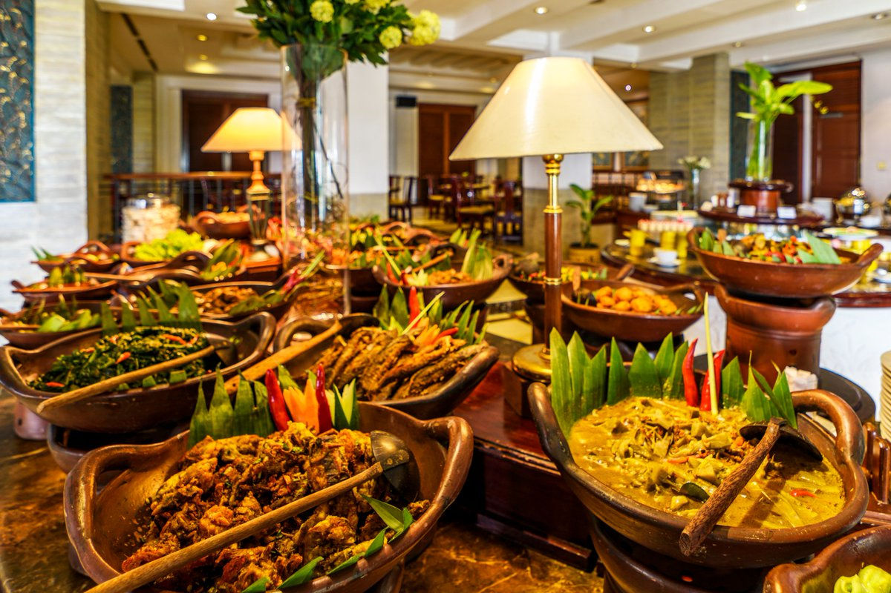
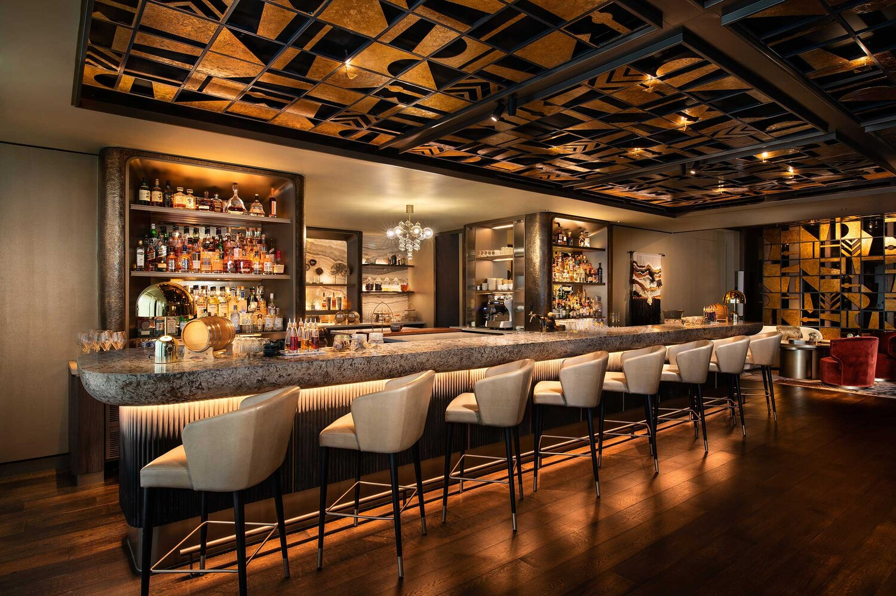
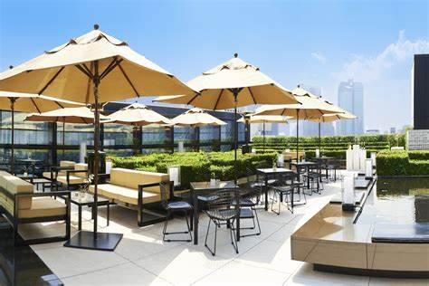
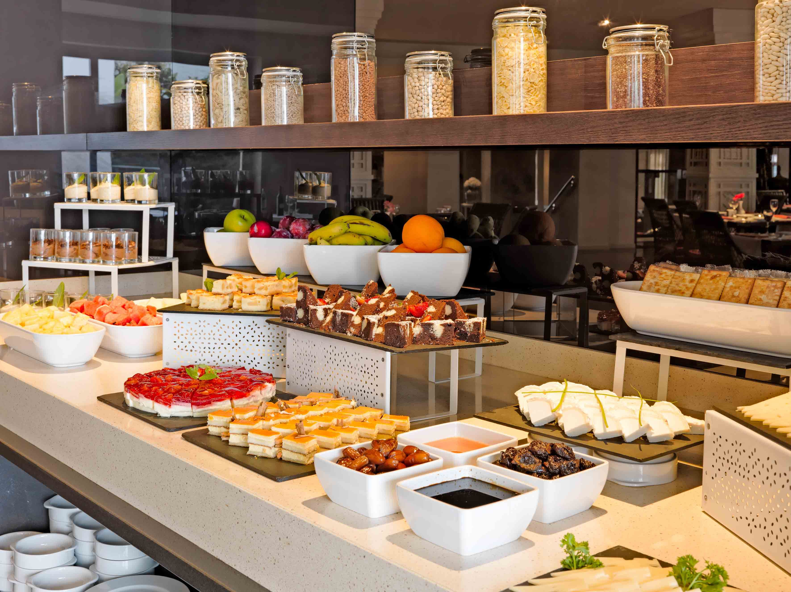